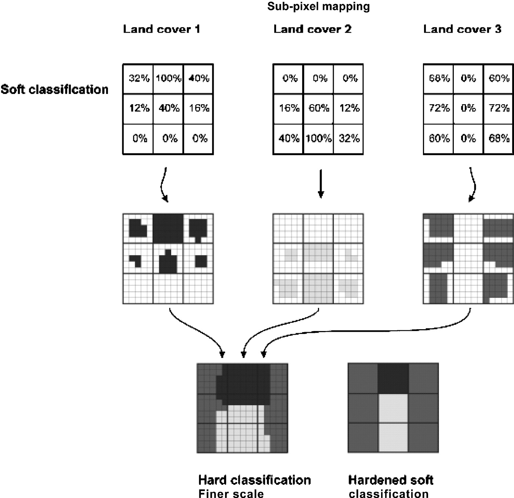
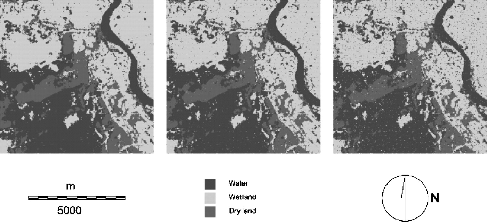

7 Week9—Classification2
7.1 Summary
Pre-classified data：Data that have been preliminarily processed or categorized in remote sensing techniques.
Examples of preclassified data include those based on surface type, vegetation cover or degree of urbanization. Such data are useful for environmental monitoring, land-use planning, disaster response and many other applications.
Object based image analysis (OBIA): Segmenting an image into meaningful multidimensional objects and then classifying and analyzing those objects based on more than just a single pixel.
- Remote sensing images are divided into groups of contiguous pixels with similar spectral features, textures or shapes by SLIC (Simple Linear Iterative Clustering).
- Feature extraction by e.g. k-means.
- Based on the extracted features, various classification algorithms (e.g., Decision Tree, Support Vector Machine, Random Forest, etc.) are used to assign objects to specific classes or categories.
- Further analysis: Mostly used for environmental monitoring and urban planning, etc.
Sub pixel analysis：Identify and quantify the mix of ground cover types within a pixel in an image.
- SMA determines the proportion or abundance of landcover per pixel.
- By analyzing the spectral properties of the pixels, it is possible to estimate the proportion of the contribution of the basic constituent units of the spectra of different surface types in each pixel.
- Endmember Extraction.
- Further analysis.
Accuracy assessment:
Component:
Confusion Matrix: The confusion matrix is a central tool for accuracy assessment, showing the relationship between the actual categories (ground truth data) and the classification results of remotely sensed data.
Overall Accuracy
Kappa Coefficient: Kappa coefficient values range from -1 to 1, with higher values indicating better consistency.
User’s Accuracy and Producer’s Accuracy
Receiver Operating Characteristic Curve: Changing the threshold value of classifier will change.
Cross validation:
- K-Fold Cross Validation means the proportion of classes in each fold will reflect the proportion of classes in the entire dataset as closely as possible.
- Spatial cross validation specifically designed to take into account spatial correlation. Which including space grouping and spacial divition. (Notably, spatial autocorrelation also needs to be considered)
7.2 Applications
Sub pixel classification is mainly based on the Spectral Unmixing technique, which assumes that the spectral reflectance of a pixel can be expressed as a weighted average of the spectral reflectance of the individual ground cover types within it.
The image that follows is a sub-pixel map of the fractional image with additional noise, derived from a regional imaging map of Cameroon. More isolated pixels and less precise readings are the result of higher noise levels. Due to the lack of spatial information inside pixels and the ensuing assumptions about spatial dependency, the inclusion of noise so amply illustrates that the quality of soft categorization is a vital aspect for the success of sub-pixel mapping.

7.3 Reflection
Sub pixel classification, as a new concept, is actually quite difficult to understand in application, and the calculation process is very complicated, to be honest I have not been able to understand his meaning very well in all these articles I have read.
However, it is now widely used in land cover and land use classification, for example, in areas where blurred boundaries or mixed pixels are common, sub-pixel analysis can provide more accurate classification results. There is also vegetation cover estimation, which can accurately quantify the proportion of vegetation cover in a pixel for environmental monitoring and agricultural research. As well as water monitoring, which accurately analyzes the distribution of water bodies and other features in areas such as rivers, lakes, and coastlines. It’s interesting to note that these natural changes can also lead to urban sprawl, and it’s one of the studies on this part that I cited in last week’s literature. Sub pixel classification is still useful for detecting urban change.
7.4 Reference
Atkinson, P. M. (2005). 'Sub-pixel Target Mapping from Soft-classified, Remotely Sensed Imagery'. Photogrammetric Engineering & Remote Sensing, 71 (7), pp. 839–846. doi: 10.14358/PERS.71.7.839.
Mertens, K. C., de Baets, B., Verbeke, L. P. C. and de Wulf, R. R. (2006). 'A sub‐pixel mapping algorithm based on sub‐pixel/pixel spatial attraction models'. International Journal of Remote Sensing. Taylor & Francis, 27 (15), pp. 3293–3310. doi: 10.1080/01431160500497127.